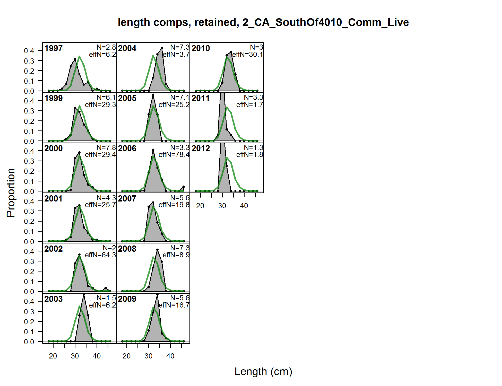
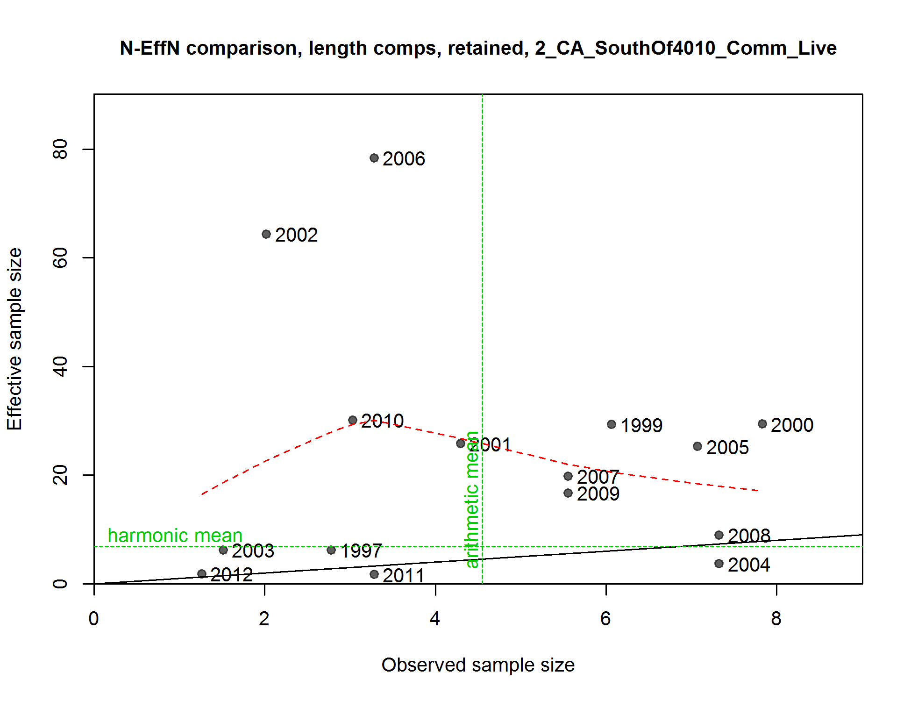
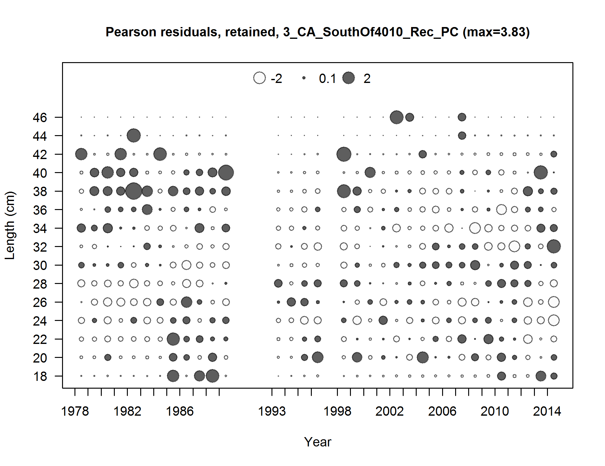
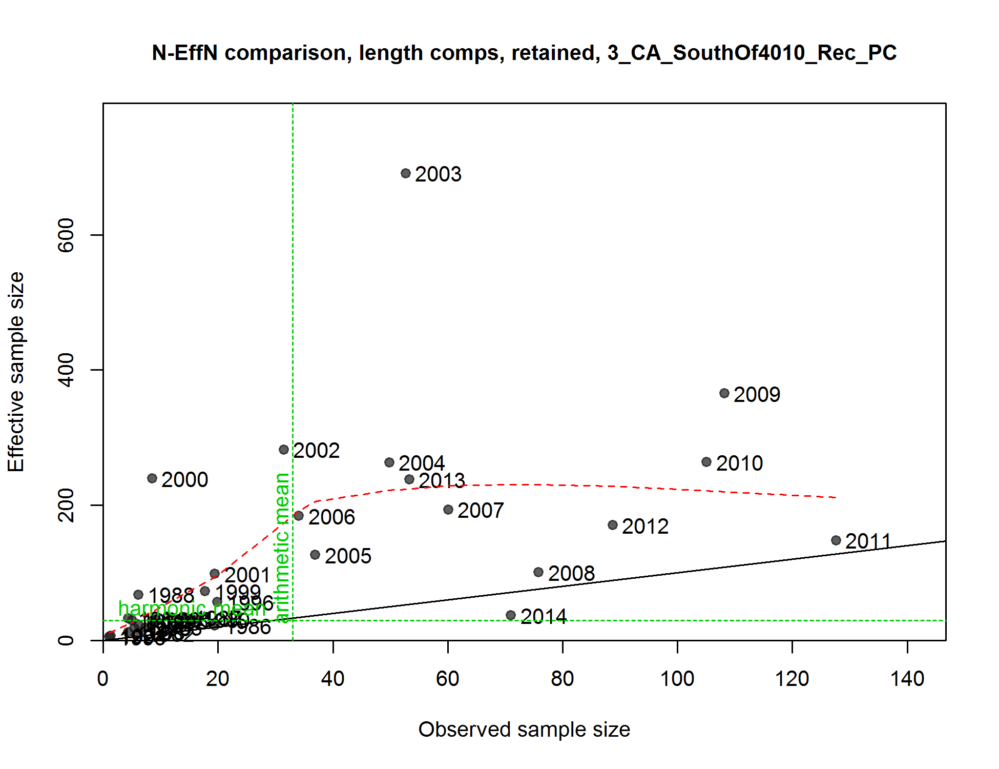
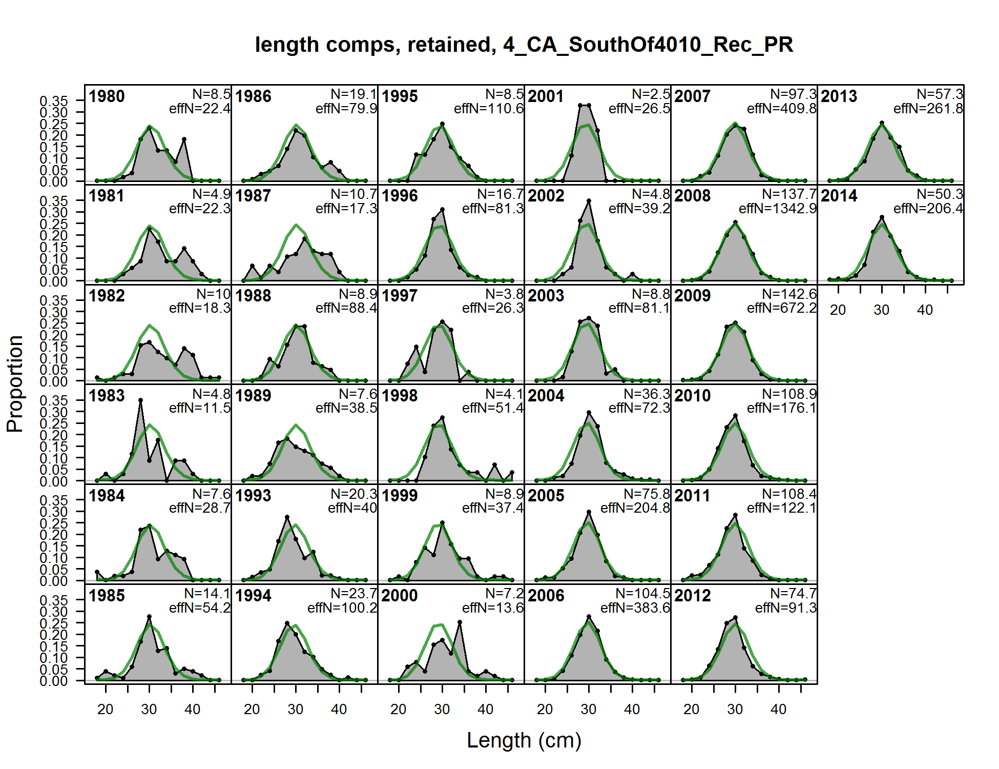
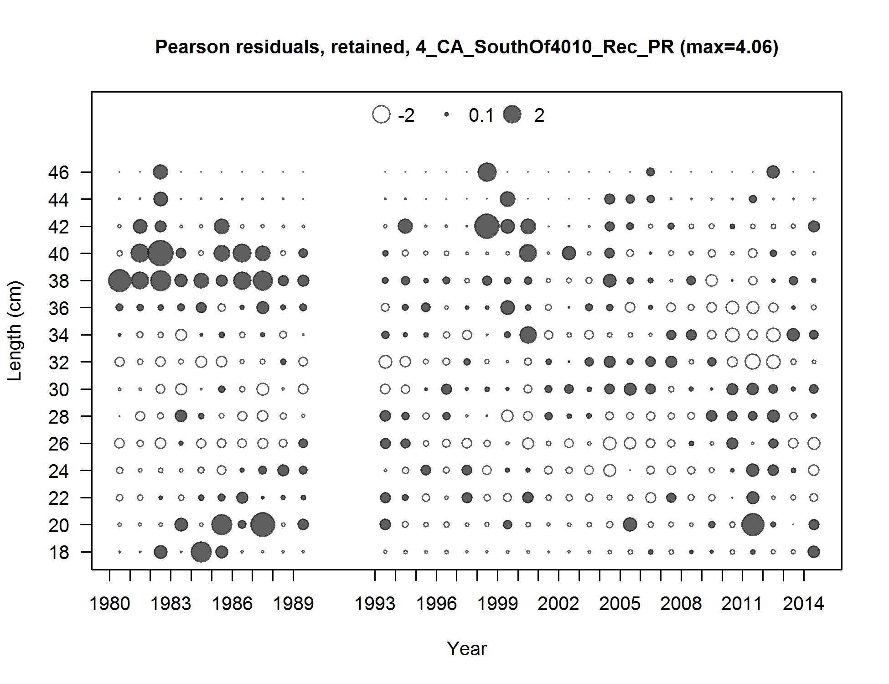
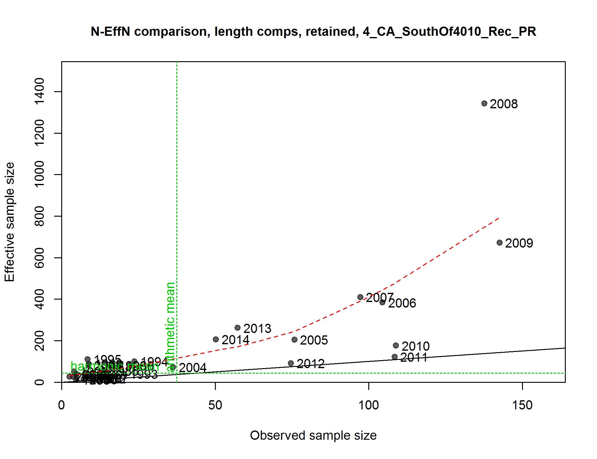
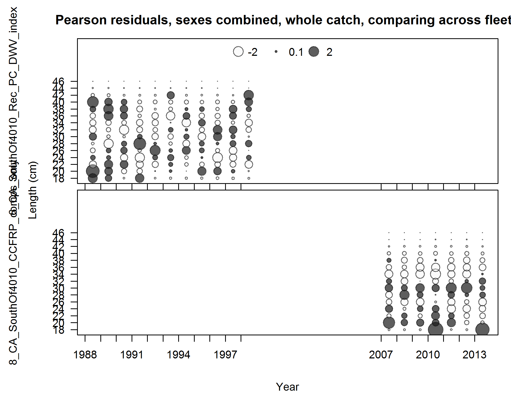

length comps, retained, Commercial_Dead
file: comp_lenfit_flt1mkt2.png
length comps, retained, Commercial_Dead
file: comp_lenfit_flt1mkt2.png
Pearson residuals, retained, Commercial_Dead (max=1.27)
Closed bubbles are positive residuals (observed > expected) and open bubbles are negative residuals (observed < expected).
file: comp_lenfit_residsflt1mkt2.png

N-EffN comparison, length comps, retained, Commercial_Dead
file: comp_lenfit_sampsize_flt1mkt2.png

Francis data weighting method TA1.8 Commercial_Dead
Suggested sample size adjustment (with 95% interval) for len data from Commercial_Dead:
1.0226 (0.7401-6.504)
file: comp_lenfit_data_weighting_TA1.8_Commercial_Dead.png

length comps, retained, Commercial_Live
file: comp_lenfit_flt2mkt2.png

Pearson residuals, retained, Commercial_Live (max=5.74)
Closed bubbles are positive residuals (observed > expected) and open bubbles are negative residuals (observed < expected).
file: comp_lenfit_residsflt2mkt2.png

N-EffN comparison, length comps, retained, Commercial_Live
file: comp_lenfit_sampsize_flt2mkt2.png

Francis data weighting method TA1.8 Commercial_Live
Suggested sample size adjustment (with 95% interval) for len data from Commercial_Live:
0.9896 (0.6175-3.1841)
file: comp_lenfit_data_weighting_TA1.8_Commercial_Live.png

length comps, discard, Commercial_Live
file: comp_lenfit_flt2mkt1.png

Pearson residuals, discard, Commercial_Live (max=4.16)
Closed bubbles are positive residuals (observed > expected) and open bubbles are negative residuals (observed < expected).
file: comp_lenfit_residsflt2mkt1.png

N-EffN comparison, length comps, discard, Commercial_Live
file: comp_lenfit_sampsize_flt2mkt1.png
Francis data weighting method TA1.8 Commercial_Live
Suggested sample size adjustment (with 95% interval) for len data from Commercial_Live:
0.9896 (0.6343-3.113)
file: comp_lenfit_data_weighting_TA1.8_Commercial_Live.png
length comps, retained, Rec_Charter
file: comp_lenfit_flt3mkt2.png

Pearson residuals, retained, Rec_Charter (max=4.06)
Closed bubbles are positive residuals (observed > expected) and open bubbles are negative residuals (observed < expected).
file: comp_lenfit_residsflt3mkt2.png

N-EffN comparison, length comps, retained, Rec_Charter
file: comp_lenfit_sampsize_flt3mkt2.png

Francis data weighting method TA1.8 Rec_Charter
Suggested sample size adjustment (with 95% interval) for len data from Rec_Charter:
0.8935 (0.6208-1.622)
file: comp_lenfit_data_weighting_TA1.8_Rec_Charter.png

length comps, retained, Rec_Private
file: comp_lenfit_flt4mkt2.png

Pearson residuals, retained, Rec_Private (max=4.54)
Closed bubbles are positive residuals (observed > expected) and open bubbles are negative residuals (observed < expected).
file: comp_lenfit_residsflt4mkt2.png

N-EffN comparison, length comps, retained, Rec_Private
file: comp_lenfit_sampsize_flt4mkt2.png

Francis data weighting method TA1.8 Rec_Private
Suggested sample size adjustment (with 95% interval) for len data from Rec_Private:
0.9716 (0.627-1.7915)
file: comp_lenfit_data_weighting_TA1.8_Rec_Private.png

length comps, whole catch, Rec_Charter_Onboard_87-98
file: comp_lenfit_flt5mkt0.png

Pearson residuals, whole catch, Rec_Charter_Onboard_87-98 (max=3.67)
Closed bubbles are positive residuals (observed > expected) and open bubbles are negative residuals (observed < expected).
file: comp_lenfit_residsflt5mkt0.png

N-EffN comparison, length comps, whole catch, Rec_Charter_Onboard_87-98
file: comp_lenfit_sampsize_flt5mkt0.png

Francis data weighting method TA1.8 Rec_Charter_Onboard_87-98
Suggested sample size adjustment (with 95% interval) for len data from Rec_Charter_Onboard_87-98:
1.4722 (0.9503-3.5787)
file: comp_lenfit_data_weighting_TA1.8_Rec_Charter_Onboard_87-98.png

length comps, whole catch, CCFRP_comps
file: comp_lenfit_flt7mkt0.png

Pearson residuals, whole catch, CCFRP_comps (max=5.19)
Closed bubbles are positive residuals (observed > expected) and open bubbles are negative residuals (observed < expected).
file: comp_lenfit_residsflt7mkt0.png

N-EffN comparison, length comps, whole catch, CCFRP_comps
file: comp_lenfit_sampsize_flt7mkt0.png

Francis data weighting method TA1.8 CCFRP_comps
Suggested sample size adjustment (with 95% interval) for len data from CCFRP_comps:
1.0273 (0.5498-7.7101)
file: comp_lenfit_data_weighting_TA1.8_CCFRP_comps.png

length comps, retained, aggregated across time by fleet
file: comp_lenfit_mkt2_aggregated_across_time.png

length comps, discard, aggregated across time by fleet
file: comp_lenfit_mkt1_aggregated_across_time.png

length comps, whole catch, aggregated across time by fleet
file: comp_lenfit_mkt0_aggregated_across_time.png

Note: this plot doesn't seem to be working right for some models.
Pearson residuals, sexes combined, retained, comparing across fleets
Closed bubbles are positive residuals (observed > expected) and open bubbles are negative residuals (observed < expected).
file: comp_lenfit_sex1mkt2_multi-fleet_comparison.png

Note: this plot doesn't seem to be working right for some models.
Pearson residuals, sexes combined, discard, comparing across fleets
Closed bubbles are positive residuals (observed > expected) and open bubbles are negative residuals (observed < expected).
file: comp_lenfit_sex1mkt1_multi-fleet_comparison.png

Note: this plot doesn't seem to be working right for some models.
Pearson residuals, sexes combined, whole catch, comparing across fleets
Closed bubbles are positive residuals (observed > expected) and open bubbles are negative residuals (observed < expected).
file: comp_lenfit_sex1mkt0_multi-fleet_comparison.png
ghost length comps, retained, Rec_Charter
file: comp_gstlenfit_flt3mkt2.png

Pearson residuals, retained, Rec_Charter (max=NA)
Closed bubbles are positive residuals (observed > expected) and open bubbles are negative residuals (observed < expected).
file: comp_gstlenfit_residsflt3mkt2.png
ghost length comps, retained, Rec_Private
file: comp_gstlenfit_flt4mkt2.png

Pearson residuals, retained, Rec_Private (max=NA)
Closed bubbles are positive residuals (observed > expected) and open bubbles are negative residuals (observed < expected).
file: comp_gstlenfit_residsflt4mkt2.png
{kind=link}
{kind=link}
{kind=link}
{kind=link}
{kind=link}
{kind=link}
{kind=link}
{kind=link}
{kind=link}
{kind=link}
{kind=link}
{kind=link}